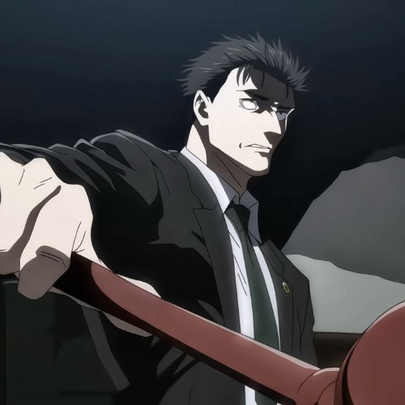
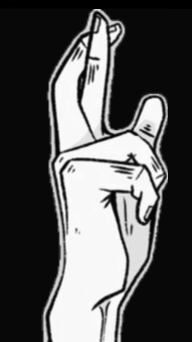
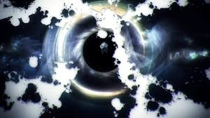
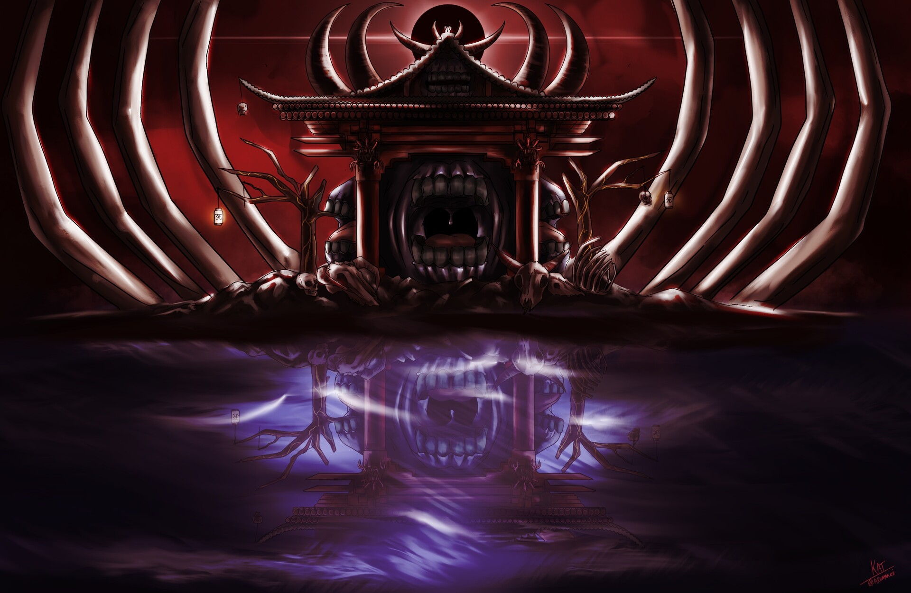
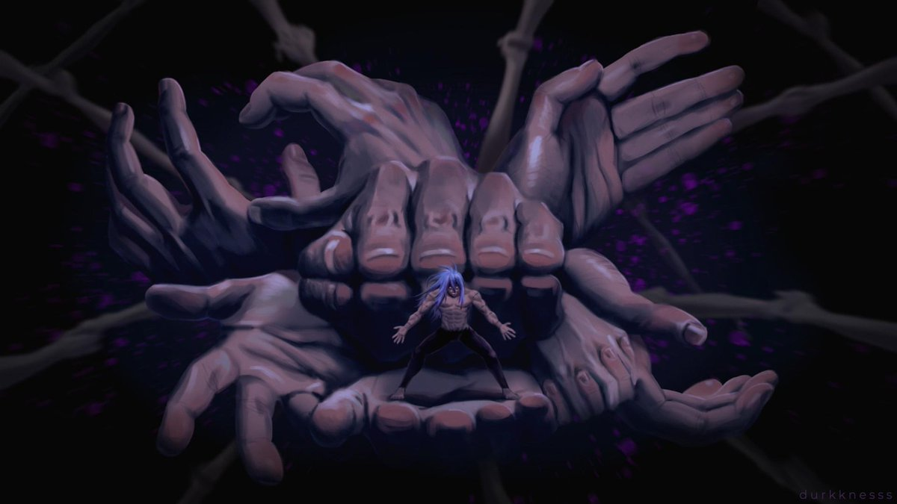
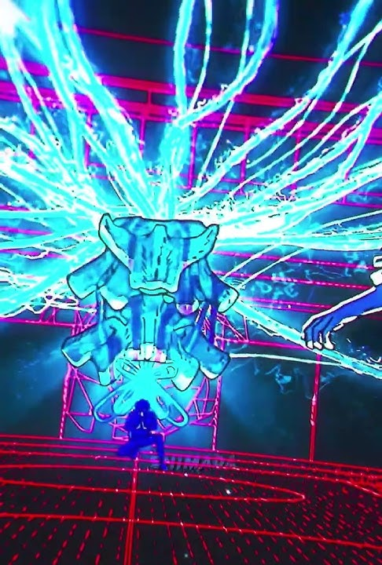

Characters
The characters of this show are some of my favorite in any animated series I have watched. The author (Gege Akutami) made great design choices and gave the main cast wonderfully crafted backstories. Click on the boxes to learn a little about each character.


fight to the death. Now using his knowledge of the law as his weapon,Higuruma's uses his domain to trap opponets in a courtroom where
he can summon a shikigami named Judgemen to deliver deadly
verdicts on his opponets." data-fullimg="Images/higurumaposere.png" data-imgjudge="Images/Judgeman.webp" data-color="#4c3228" data-return="Return To Favorites Page" data-voice="Audio/higurumavl.mp3" data-align="right" data-title="Deadly Sentencing" data-voicedelay="1000" data-textdelay="0" alt="Hiromi Higuruma" >

Domain Expansions
Domain expansions are in my opinion the most captivating part of this series. A domain expansion represents the physical manifestation of the users' subconcious so everyone has their own special domain expansion. Though not many people are able to use this ability since it is considered the pinnacle of jujustu sourcery. Below I have provided a couple examples





Unlimited Void
User: Satoru Gojo
Floods the target's mind with an endless stream of information, completely paralyzing them as they experience everything all at once
Malevolent Shrine
User: Ryomen Sukuna
An open-barrier domain that rains down invisible, destructive slashing attacks on everything in its massive 200 meter radius.
Self Embodiment of Perfection
User: Mahito
Traps the target in a space where the user has absolute control, allowing them to physically manipulate anyone trapped in the domain.
Chimera Shadow Garden
User: Megumi Fushiguro
Replaces the floor with an ocean of shadows and gives the user complete control of shadows to summon shikigami, clone themself, or even store objects within the shadow relm.
Soundtrack
I am absolutely in love with the soundtrack for this show. They have some of the best sound engineers working on these tracks. While the whole OST is very good these are my top 5 tracks that I know would bring Mozart himself to tears.
.Another really great part of the music outside of the OSTs is the openings for the show, I and many others think that the first opening of the show is the best one,
with over 1.3 billion listens across Spotify and Youtube Music.
Go Check It Out